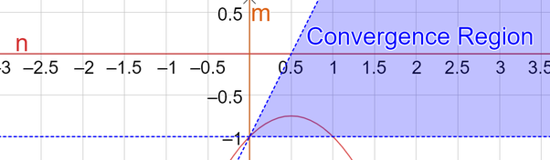
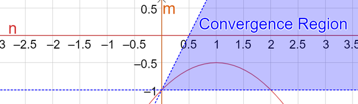

We want to determine all rational pairs of $(m,n)$ such that
$$ \int_{0}^{\infty}\frac{x^m}{\left(x^n+1\right)^2} \, \mathrm dx = \pi. $$
Here we show that for $m,n \in \mathbb{R}$ and $r \in \mathbb{N}$:
$$ \int_{0}^{\infty}\frac{x^m}{\left(x^n+1\right)^{r}} \, \mathrm dx = \frac{(-1)^{r-1}}{(r-1)!}\frac{\pi}{|n|}\csc\frac{\pi (n-m-1)}{n}\prod_{k=1}^{r-1}\left(\frac{m}{n}+\frac{1}{n}-k\right), $$
where $(nr>m+1 \land m>-1) \lor (nr < m+1 \land m<-1)$ for convergence. Considering the case where $n>0$, for our problem by letting $r=2$ we need
$$ -\frac{\pi}{n}\csc\frac{\pi (n-m-1)}{n}\left(\frac{m}{n}+\frac{1}{n}-1\right) = \pi, $$
under the convergence constraint that $(2n>m+1 \land m>-1)$ and the constraint that $m$ and $n$ are rational.
We first take the subcase where
$$\begin{aligned} -\frac{\pi}{n}\left(\frac{m}{n}+\frac{1}{n}-1\right) &= \pi
\\ \csc\frac{\pi (n-m-1)}{n} &= 1. \end{aligned} $$
Manipulating these equalities, we find that
$$ m = -n^2+n-1. \tag{1.}$$
and
$$ q = \frac{n-2m-2}{4n}, \, \, q\in\mathbb{Z}. \tag{2.}$$
Plotting
(1.) vs $(2n>m+1 \land m>-1)$:

we see that we must at least have $n \in (0,1)$. Now we substitute
(1.) into
(2.):
$$ q = \frac{2n-1}{4}, $$
which gives the lone valid solution when $n=1/2$. Therefore, our first pair that satisfies the question statement is
$$ (m,n) = (-3/4,1/2). $$
Using an interval inverting substitution,
$$ \int_{0}^{\infty}\frac{x^{-3/4}}{\left(x^{1/2}+1\right)^2} \, \mathrm dx = \int_{0}^{\infty}\frac{x^{-5/4}}{\left(x^{-1/2}+1\right)^2} \, \mathrm dx = \pi , $$
we quickly gain the negative “conjugate” of our first pair:
$$ (m,n) = (-5/4,-1/2). $$
We now take the subcase where
$$\begin{aligned} -\frac{\pi}{n}\left(\frac{m}{n}+\frac{1}{n}-1\right) &= \frac{\pi}{2}
\\ \csc\frac{\pi (n-m-1)}{n} &= 2. \end{aligned} $$
Manipulating these equalities, we find that
$$ m = -\frac{1}{2}n^2+n-1. \tag{3.}$$
and
$$ q = \frac{5n-6m-6}{12n}, \, \, q\in\mathbb{Z}. \tag{4.}$$
Plotting
(3.) vs $(2n>m+1 \land m>-1)$:

we see that we must at least have $n \in (0,2)$. Now we substitute
(3.) into
(4.):
$$ q = \frac{3n-1}{12}, $$
which gives the lone valid solution when $n=1/3$. Therefore, our third pair that satisfies the question statement is
$$ (m,n) = (-13/18,1/3). $$
Using an interval inverting substitution,
$$ \int_{0}^{\infty}\frac{x^{-13/18}}{\left(x^{1/3}+1\right)^2} \, \mathrm dx = \int_{0}^{\infty}\frac{x^{-23/18}}{\left(x^{-1/3}+1\right)^2} \, \mathrm dx = \pi, $$
we quickly gain the negative “conjugate” of our third pair:
$$ (m,n) = (-23/18,-1/3). $$
Using the above methodology, it is left to the reader to verify that the last $4$ pairs are given by
$$\begin{aligned} (m,n) &= (-1/4,1/2)
\\ &= (-7/4,-1/2)
\\ &= (-11/18,1/3)
\\ &= (-25/18,-1/3). \end{aligned} $$
We conclude that there are $8$ unique solutions:
$$\begin{aligned} (m,n) &= (-1/4,1/2)
\\ &= (-3/4,1/2)
\\ &= (-5/4,-1/2)
\\ &= (-7/4,-1/2)
\\ &= (-11/18,1/3)
\\ &= (-13/18,1/3)
\\ &= (-23/18,-1/3)
\\ &= (-25/18,-1/3). \end{aligned} $$